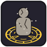

Home › Your ninja › Rare arts and legendary blades
Rare arts and legendary blades
The most famous techniques and swords can't be bought, crafted or inherited: they have to be found.
Hiraishin, Edo Tensei, Rasengan, Chidori, Shadow Clone and the toad, snake and slug summoning contracts are learned only from very rare forbidden scrolls, about one or two a game-year. The four named legendary blades exist once per world and are found, never forged or bought.
The rare arts
| Art | What the scroll does |
|---|---|
| Opens the Hiraishin tree and teaches Seal Touch | |
 Edo Tensei (Impure World Reincarnation) | Opens the Edo Tensei tree and teaches Edo Tensei |
| Teaches the Rasengan; its variants (Rasenshuriken, Rasenfire and others) follow | |
| Teaches the Chidori (Lightning Blade); its variants follow. Needs lightning nature | |
| Teaches Shadow Clone | |
| Gamakichi first; bigger toads, the reverse summoning and Toad Sage Mode follow | |
| A cobra first; the great snake, the reverse summoning and Snake Sage Mode follow | |
| The slug summon |
After the scroll, the rest of the art is learned with technique points, as usual. Without the scroll, points can't buy it, and nothing else teaches it: no gene, no random technique scroll, no master, no scribe (a rare art can't be written down). The scroll is used up after reading.
Where the scrolls come from
- Landmarks: scroll caches (40%), sealed temples (30%) and clan laboratories (20%) may hold one.
- Missions: an S-rank mission's bonus (15%) or an A-rank one (5%).
- The Bingo Book: a hunted target carries one a quarter of the time.
- The village archive request permit (8% on top of its scroll). See Diplomacy.
Which art a scroll holds is random. Edo Tensei is the rarest: about one scroll in twelve. Expect one or two a game-year. A scroll sells for a lot, if you'd rather trade it.
World of Naruto's traders no longer stock the Rasengan, Flying Raijin, Shadow Clone or summoning scrolls, and the old genes that taught them are gone.
The legendary blades
Four named blades exist once per world. They can't be forged or bought; they are only found.
 Ryūgeki, the dragon cleaver: a sword-halberd of enormous size. Every blow burns and can hurl the target back.
Ryūgeki, the dragon cleaver: a sword-halberd of enormous size. Every blow burns and can hurl the target back. Kibaō, the fang king blade: its wind cuts deep and draws chakra out of the foe.
Kibaō, the fang king blade: its wind cuts deep and draws chakra out of the foe. Hoshigiri, the star cutter: a sword of impossible length that cuts through armour as if it were not there.
Hoshigiri, the star cutter: a sword of impossible length that cuts through armour as if it were not there. Fūraimaru, the wind-thunder sword: wind and lightning; its strikes can leave a foe shaking.
Fūraimaru, the wind-thunder sword: wind and lightning; its strikes can leave a foe shaking.
They turn up on old battlefields (30%), in sealed temples (25%), in clan laboratories (10%), and in the hands of a Bingo Book target (10%), always of legendary quality. Once a blade has appeared, it never appears again in that world.
Other legendary forgings (the clockwork and dhampir blades) can still be made, after Legendary forging research.